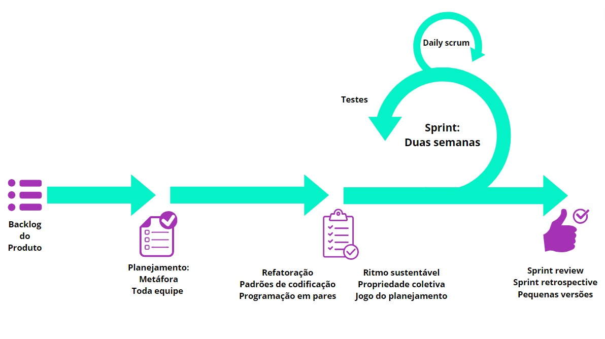

Processos de desenvolvimento de software
Histórico de Revisão
| Data | Versão | Descrição | Autores |
|---|---|---|---|
| 25/09/2023 | 0.1 | Adicionando os processos de desenvolvimento | Júlia Yoshida |
| 25/09/2023 | 0.2 | Atualizando atividades de engenharia de requisitos | Júlia Yoshida, Luana Ribeiro, Yasmim Oliveira e Yan Luca |
| 25/09/2023 | 0.3 | Detalhando o uso do Sommervile | Júlia Yoshida |
| 14/11/2023 | 0.4 | Correção Scrum | Luana Rbeiro |
Metodologias
| Abordagem | Ciclo de vida | Processo |
|---|---|---|
| Ágil | Iterativo/Incremental | Scrum/XP |
No processo de desenvolvimento de uma aplicação, é importante ter em mente que o êxito do projeto não se restringe apenas à codificação. O sucesso depende igualmente da identificação das características da aplicação, para que a partir disso, possamos escolher as metodologias que melhor atendem às nossas necessidades.
A grande diferença entre uma abordagem dirigida à plano para uma ágil é a limitação que cada projeto possui, para o Matriculaí suas limitações estão no tempo e nos recursos financeiros o que direciona o projeto para uma abordagem ágil. Ao afunilar o universo de processo de desenvolvimento após a escolha da abordagem, o ciclo de vida se atém ao contato constante (ou não) com o cliente que, particularmente, se dispôs a ter um contato frequente com a equipe. O processo se deu ao utilizar o framework Sommerville que é um conjunto de perguntas de cárater técnico, organizacional e humano que nos proporcionou a segurança para eleger o Scrum/XP além de fatores como a familiaridade da equipe, o foco em feedback constante e entregas de valor.
Sommervile
A escolha da abordagem foi feita a partir dos critérios propostos pelo framework Sommervile. Para isso, respondemos às seguintes perguntas:
Perguntas técnicas
- Qual é o tamanho do sistema que está sendo desenvolvido? Pequeno.
- Que tipo de sistema está sendo desenvolvido? Solução Web.
- Qual é a vida útil prevista para o sistema? Indefinido.
- O sistema está sujeito a controle externo? Não.
Perguntas humanas
- Qual é o nível de competência dos projetistas e programadores do time de desenvolvimento? Júnior.
- Como está organizado o time de desenvolvimento? Scrum Master, Dev Back e Front, CI Tester (responsabilidade compartilhada).
- Quais são as tecnologias disponíveis para apoiar o desenvolvimento do sistema? ReactJs, GitHub, Notion, Google Meet, MySQL, NodeJs.
Perguntas organizacionas
- É importante ter uma especificação e um projeto (design) bem detalhados antes de passar para a implementação — talvez por motivos contratuais? Não.
- É realista uma estratégia de entrega incremental, na qual o software é entregue aos clientes ou outros stakeholders e um rápido feedback é obtido? Sim.
- Os representantes do cliente estarão disponíveis e dispostos a participar do time de desenvolvimento? Sim.
- Existem questões culturais que possam afetar o desenvolvimento do sistema? Não.
Atividades da engenharia de requisitos
Na tabela a seguir estão as atividades de engenharia de requisitos que serão realizadas durante o desenvolvimento do software:
| Nome da atividade | Método | Momento na Sprint | Ferramenta | Entrega |
|---|---|---|---|---|
| Elicitação e Descoberta | - Reuniões com o cliente | - Sprint Review- Sprint Planning | - Google Meet- Notion | - Diagrama de Ishikawa- Documentação da reunião com o cliente |
| Análise e Consenso | - Estudo individual e reunião entre a equipe - Reunião de confirmação com o stakeholder | - Sprint Planning- Entre a Planning e a Review- Sprint Review | - Google Meet - Notion | - Backlog de requisitos- Backlog da sprint- Documentação da validação do cliente |
| Declaração | - História de usuário | - Sprint Planning- Durante a sprint caso necessário | - Notion | - Backlog de requisitos com histórias de usuário |
| Representação | - Prototipação | - Sprint Planning- Sprint Review | - Figma | - Protótipo |
| Verificação e Validação | - Testes na aplicação e de validação do cliente- Reunião com o cliente | - Testes durante a sprint- Sprint Review | - Google forms- Ferramentas de teste | - Documentação dos testes - Documentação do feedback do cliente |
| Organização e Atualização | Listagem dos requisitos- Reuniões entre a equipe- Reuniões com o stakeholder | - Sprint Planning- Sprint Review- Atividades durante a sprint | - Notion- Discord - Google Meet | - Documentação atualizada - Aplicação atualizada |
Configurações do processo de engenharia de requisitos: Participativo
Escolhemos o processo de engenharia de requisitos participativo, por estarmos trabalhando com uma metodologia ágil em um contexto em que temos um cliente específico e em que o foco é explorar os requisitos em uma série de iterações, tendo contato constante com o cliente.
| Alvo | Propósito | Tempo |
|---|---|---|
| Cliente específico | Exploratório | Iterativo |
SCRUM
| Evento | Descrição |
|---|---|
| Daily Scrum | Reunião diária com duração máxima de 15 minutos, na qual os membros da equipe devem discutir o progresso de trabalho da Sprint desde a última reunião diária. No caso deste projeto, serão realizadas trocas de mensagens diárias no grupo da equipe, para deixar todos a par das atividades semanais |
| Sprint Planning | Reunião realizada no inicio de cada sprint com o intuito de definir as entregas da sprint em questão. |
| Sprint Retrospective | Essa reunião ocorrerá ao fim de cada sprint e terá como objetivo analisar a dinâmica de trabalho da equipe e das ferramentas utilizadas, procurando melhorar se algo deixar a desejar. |
| Sprint Review | Durante a Sprint Review, faremos a revisão dos resultados da Sprint, a validação do que foi implementado, o alinhamento de expectativas e atualização do Product Backlog com a presença do cliente. |
| Product Backlog | Lista priorizada dos requisitos do produto que precisam ser desenvolvidos para atender aos objetivos do projeto. |
Estratégias eXtremme Programming
| Estratégia | Descrição |
|---|---|
| Propriedade Coletiva | Qualquer membro da equipe pode alterar qualquer parte do código da aplicação a qualquer momento. |
| Ritmo Sustentável | Evita a sobrecarga de trabalho e o esgotamento dos membros da equipe. |
| Metáfora | Explicar o projeto de forma simples auxilia o time e o cliente a entender os elementos do sistema. |
| Refatoração | Melhorar o código existente sem alterar sua funcionalidade. |
| Programação em Pares | É uma abordagem colaborativa em que dois desenvolvedores trabalham juntos em um único código, compartilhando conhecimentos e habilidades para melhorar a qualidade e eficiência do desenvolvimento de software. |
| Jogo de Planejamento | Será utilizado no início de cada Sprint da metodologia SCRUM para priorizar as funcionalidades e definir as tarefas que serão realizadas. |
| Toda a Equipe | Fomenta a colaboração entre todos os membros da equipe para resolver problemas e atingir os objetivos do projeto, o que resulta em maior produtividade e na redução de conflitos entre os membros. |
| Pequenas Versões | Tornam o acompanhamento do progresso do projeto mais claro e objetivo, facilitando a identificação mais rápida de problemas tanto para a equipe quanto para o cliente. |
| Padrões de codificação | Uma codificação padronizada facilita a comunicação, encoraja a posse coletiva e evita problemas na programação. |
Representação Scrum/XP
